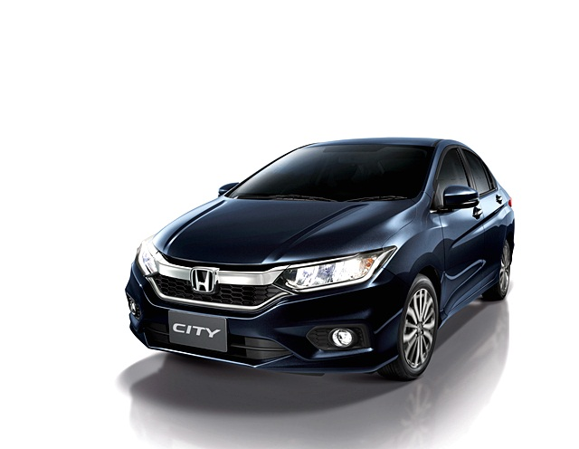
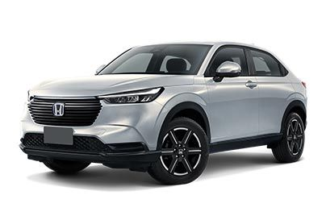

|  |
Honda City S MT |
| ราคา 550,000 บาท |
จุดเด่น คือ ฮอนด้า ซิตี้ รุ่นล่าสุดนี้ติดตั้งเครื่องยนต์ i-VTEC 1.5 ลิตร กำลังสูงสุด 120 แรงม้า ที่มาพร้อมกับระบบเกียร์อัตโนมัติ 5 สปีดและระบบควบคุมการเปิด-ปิดลิ้นปีกผีเสื้อแบบอิเล็กทรอนิกส์ DBW (Drive by Wire) โดยมีให้เลือก 3 รุ่นหลัก (S, V และ SV) ในราคา 559,000 บาทสำหรับรุ่นเริ่มต้น S ไปจนถึง 704,000 บาทในรุ่นท็อป SV และสำหรับรุ่น S เท่านั้นที่มีระบบเกียร์แบบธรรมดาและอัตโนมัติ
|
|
Civic Type R |
| ราคา 3,990,000 บาท |
| จุดเด่น คือ เครื่องยนต์ civic type R. เครื่องยนต์ Direct Injection DOHC VTEC TURBO ขนาด 2.0 ลิตร 4 สูบ 16 วาล์ว ได้รับการพัฒนามาสำหรับ ฮอนด้า ซีวิค ไทป์ อาร์ โดยเฉพาะ มอบกำลังสูงสุด 320 แรงม้า แรงบิดสูงสุด 420 นิวตัน-เมตร ที่ทำงานร่วมกับเกียร์ธรรมดา 6 สปีด |
|
Honda BR-V 2024 |
| ราคา 915,000 บาท |
| จุดเด่น คือ เครื่องยนต์เบนซิน แบบ 4 สูบ 1.5 ลิตร 117 แรงม้า ที่ 6,000 รตน. แรงบิดสูงสุด 14.9 กก.-ม. ที่ 4,700 รตน. เกียร์อัตโนมัติแบบแปรผันต่อเนื่อง CVT 5 ที่นั่ง |
 |
Honda Civic 2024 รุ่น e:HEV RS |
| ราคา 1,259,000 บาท |
| จุดเด่น คือ ส่วนรุ่นเครื่องยนต์เบนซิน 1.5 ลิตร เทอร์โบ ให้กำลังสูงสุด 178 แรงม้า ที่ 6,000 รอบ/นาที และแรงบิดสูงสุด 240 นิวตันเมตร ที่ช่วง 1,700-4,500 รอบ/นาที อัตราสิ้นเปลืองเฉลี่ย 17.2 กิโลเมตร/ลิตร |
|  |
Honda HR-V 2024 รุ่น e:HEV RS |
| ราคา 1,179,000 บาท |
| จุดเด่น คือ เครื่องยนต์รหัส LEC6 เบนซิน 4 สูบ Atkinson Cycle ขนาด 1.5 ลิตร 1,498 ซีซี. กระบอกสูบ x ช่วงชัก : 73.0 x 89.5 มิลลิเมตร อัตราส่วนกำลังอัด 13.5 : 1 พละกำลังสูงสุด 105 แรงม้า ที่ 6,000 – 6,400 รอบ/นาที แรงบิดสูงสุด 127 นิวตันเมตร ที่ 4,500 – 5,000 รอบ/นาที รองรับน้ำมันสูงสุด E20 แบตเตอรี่ Lithium-ion |
|
Honda Accord 2024 รุ่นHEV RS |
ราคา 1,799,000 บาท
|
| จุดเด่น คือ ไฟเลี้ยวหน้าหลังแบบ LED Sequential Honda Smart Key Card เซ็นเซอร์ตรวจจับเสียงรบกวนจากพื้นถนน หลังคาซันรูฟแบบพาโนรามา กระจกมองข้ามสีดำแบบสปอร์ต ช่องระบายอากาศข้างสีน้ำเงิน |
|